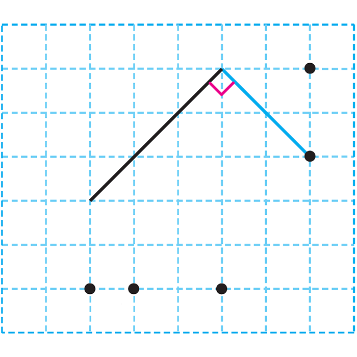

- 1
- 2
- 3
- 4
- 5
- 6
- 7
- 8
- 9
- 10
- 11
- 12
- 13
- 14
-
1 그림과 같이 두 점을 이은 곧은 선을 무엇이라고 하는지 써 보세요.
선분 -
2 선분을 모두 찾아 기호로 나타내 보세요.
ㄱ
ㄴ
ㄷ
ㄹ
ㅁ
ㅂ
ㅅ
ㅇ
선분ㄱㄴ 또는 선분 ㄴㄱ, 선분 ㅅㅇ 또는 선분 ㅇㅅ -
3 반직선을 찾아 기호로 나타내 보세요.
ㄱ
ㄴ
ㄷ
ㄹ
ㅁ
ㅂ
ㅅ
ㅇ
반직선 ㄷㄹ -
4 직선을 찾아 기호로 나타내 보세요.
ㄱ
ㄴ
ㄷ
ㄹ
ㅁ
ㅂ
ㅅ
ㅇ
직선 ㅁㅂ 또는 직선 ㅂㅁ -
5 각을 보고 잘못 설명한 것을 찾아 기호를 써 보세요.
ㄹ
ㅁ
ㅂ
ㄱ 꼭짓점은 점 ㅁ입니다.
ㄴ 꼭짓점은 1개입니다.
ㄷ 변은 2개입니다.
ㄹ 각 ㄹㅂㅁ입니다.
ㄹ -
6 각 ㄱㄷㄴ을 그려 보세요.
드래그하여 그어 보세요. -
7 그림에서 찾을 수 있는 직각은 모두 몇 개인지 써 보세요.
3개 -
8 주어진 선분과 이어서 직각을 그릴 수 있는 점을 찾아보세요.
ㄱㄴㄷㄹㅁ점ㄹ -
9 점 ㄷ을 옮겨 직각삼각형 ㄱㄴㄷ을 그려 보세요.
드래그하여 점 ㄷ을 옮기세요. -
10 직각삼각형을 모두 찾아 기호로 나타내 보세요.
가
나
다
라
마
바
가, 마 -
11 직사각형을 모두 찾아 기호를 써 보세요.
가
나
다
라
마
바
나, 라 -
12 정사각형을 모두 찾아 기호를 써 보세요.
가
나
다
라
마
바
사
나, 사 -
13 도형에서 찾을 수 있는 크고 작은 직각삼각형이 모두 몇 개인지 써 보세요.
4개 -
14 두 사각형의 같은 점과 다른 점을 써 보세요.
같은 점예네 각이 모두 직각입니다.
다른 점예왼쪽 사각형은 네 변의 길이가 모두 같지만 오른쪽 사각형은 그렇지 않습니다.